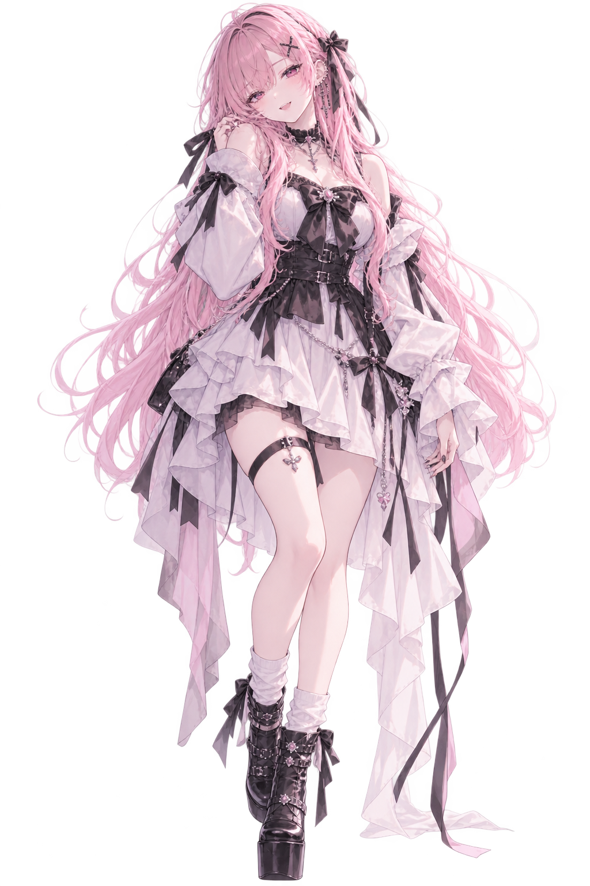

QUARTET
「ちょっとシン！！」
SMOKY PINK

名前： Yuna / ユナ
年齢： 27歳
身長： 165cm
職業： クリエイティブ・デザイン関係
活動： ゲーム配信・コラボ中心
メインゲーム： VALORANT / APEX / Minecraft
イメージカラー： スモーキーピンク
得意： サポート / 状況判断 / 人の面倒を見ること
所属： QUARTET
落ち着いた雰囲気を持つ、 QUARTETのお姉さん的存在。 4人でいるときも比較的冷静で、 周りの状況を見ながら自然に会話をまとめることが多い。
RiaやRenが騒いでいても、 ある程度までは笑って見ているが、 あまりにも収拾がつかなくなると しっかりツッコミを入れる。
面倒見がよく、 後輩のRiaのこともさりげなく気にかけている。 ただしShinには遠慮がなく、 ときどき「ちょっとシン！！」が飛ぶ。
VALORANT / APEX / Minecraft / GTA / 雑談 / コラボ
現在ランク： Platinum 2
最高ランク： Diamond 1
現在ランク： Platinum 1
最高ランク： Diamond 4
落ち着いた雑談とゲーム配信が中心。 FPSではサポート役として味方を見ながら動くことが多く、 QUARTETでは自然とまとめ役になる。 ただし仲の良い相手には意外と容赦がない。
CALM PARTNERS / THE ADULTS
QUARTETの中でも特に落ち着いた二人。 RiaとRenが騒いでいる横で、 なんとなく状況を把握していることが多い。
YunaはShinに遠慮なく話しかけることができ、 ShinもYunaには比較的素直。 二人でいるときは会話のテンポもゆっくりで、 4人でいるときとは少し違った空気になる。
YunaがShinにツッコミを入れることも多く、 ときどき配信中に 「ちょっとシン！！」 と声が飛ぶ。
RiaとRenが何かを始めても、 二人で顔を見合わせて 「また始まったね」 で済ませていることが多い。
後輩のような存在。 自由に動き回るRiaを見守りつつ、 必要なときはしっかり止める。
調子に乗っていると軽くあしらわれる相手。 ただしゲーム中はしっかり頼りにしている。
長年のゲーム仲間。 一緒にいると落ち着く一方、 Yunaからのツッコミも多い。
普段は落ち着いているYunaが、 Shinに対してだけ急に声を大きくすることがある。
RiaとRenが騒いでいる横で、 Shinと一緒に状況を見守っていることが多い。
VALORANTではSageをよく使用し、 味方を支える動きが得意。
仕事が終わったあとは、 お風呂と夕食を済ませてからゆっくりするタイプ。
普段の落ち着いた雰囲気からは想像できないくらい、 仲の良い相手へのツッコミは鋭い。